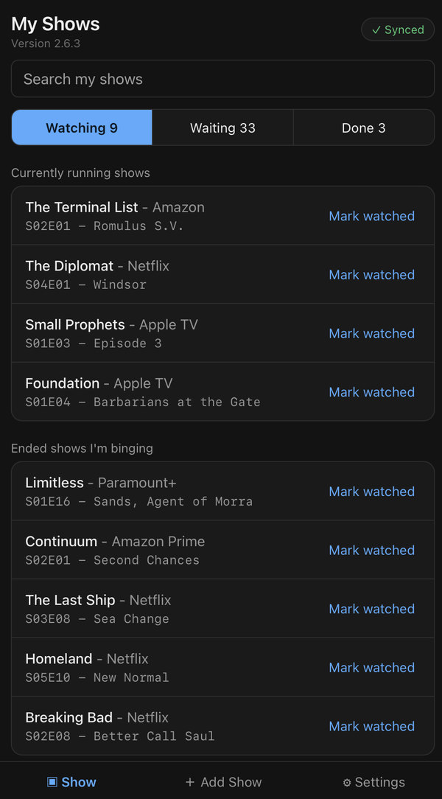
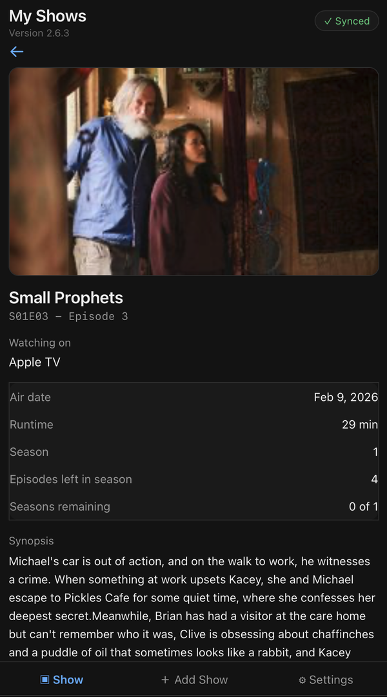

My Shows
Always know what episode to watch next.
Free. No install. No hosting. Syncs across your devices through your own GitHub account.
My Shows is a simple TV episode tracker: search for a show, tell it where you left off, and it tells you what's next — on your phone, tablet, or computer, with the same list on each. It's free for everyone to use and there's nothing to pay for, though donations to help fund my minimal costs are always welcome.

Opens straight in your browser. Works on phone, tablet, or desktop. You'll need a free GitHub account — My Shows keeps your list in a gist there so it's the same on every device. New to it? The how-to-use guide covers everything, including getting a token.
Using the original version? My Shows v1 is still available for legacy users, along with its v1 guide.


The list view and an episode's detail view
Nothing to install. Nothing to host.
This isn't an app you download, and it isn't something you have to set up a server for. It's a single web page that runs entirely in your browser. Open the link, use it, and (optionally) add it to your home screen for quick access — that's just a bookmark shortcut, not a real installation. There's nothing to build, deploy, update, or maintain on your end.
Free
No subscription, no ads, no in-app purchases. It costs nothing to use because it costs almost nothing to run.
No install
It's a web page, not an app store download. Open it in any modern browser and it works immediately.
No hosting to set up
It's already hosted. You don't need your own server or domain. Sync uses a free gist in your own GitHub account, not a server of mine.
How it works
- Connect once with a GitHub token that has only the gist scope. My Shows creates a gist in your GitHub account to hold your list. On your other devices, connect with a token from the same account and your list loads.
- Search for a show by name. Show data comes from TVmaze, a free public TV database.
- Tell it where you're up to: starting fresh, a specific season and episode, or caught up.
- It tells you exactly what to watch next, and sorts your shows into Watching (currently running shows, and ended shows you're binging), Waiting (caught up and waiting for the next episode or season, or suspended), and Done.
- Tap "Mark watched" and it moves on to the next episode automatically. The "✓ Synced" badge at the top confirms your gist has your latest changes.
See the full how-to-use guide → (connecting, adding a show, Watching / Waiting / Done, suspending vs. deleting a series, and fixing sync problems.)
Your data stays yours
There's no My Shows server or database storing your watch list. Your list is saved in your browser on each device and in a secret gist in your own GitHub account. Secret gists aren't listed publicly or searchable, but anyone who has a gist's exact link can open it, so don't share that link. Your token is stored only on the device where you entered it. For your list, the app talks only to TVmaze for show and episode information and to GitHub to sync — your list is never sent to me. This page and the app also load Statcounter, a web analytics service, to count visits and spot outages; it never sees your list.
Coming from v1?
v2 is a separate app, and v1 keeps working as before. To bring your v1 list across, download a backup in v1 (the ↻ icon), then in v2 go to Settings › Backup & restore › Choose backup file. This replaces whatever is in your v2 list. Shows that can't be brought across — for example ones with no "Watching on" platform — are listed afterwards with the reason, so you can add them again.
Limitations — read this before you rely on it
- Requires a GitHub account and token. Sync can't be turned off. If your token expires or is revoked, the app keeps working on that device but stops syncing until you enter a new one.
- No merging of simultaneous edits. The most recent change wins. If you edit your list on two devices before either has synced, one set of changes will overwrite the other.
- Your gist is your safety net, not a guarantee. iOS can clear a website's local storage at any time, but your list comes back from your gist when you reconnect. If the gist itself is deleted or your GitHub account is lost, so is your list.
- Extra backups are manual. You can also download a backup file from Settings › Backup & restore, but only when you choose to.
- No notifications. Nothing will alert you when a new episode airs — you have to open the page to check.
- Depends on TVmaze's data. If a show isn't in TVmaze's database, or its episode data has gaps, that carries through here too.
No guarantees
This is a free, independently-run hobby project, not a commercial product with a service agreement. It's offered as-is, with none of the following guaranteed:
- Availability. The site could go down temporarily, change, or be discontinued entirely at any time, without notice.
- Data accuracy. Show and episode information comes from TVmaze's free public database and isn't independently verified — errors, gaps, or delays in their data carry through here.
- Data preservation. Your list lives in your own GitHub gist and in your browser. There's no My Shows server-side backup to recover it from if both are lost.
- Fitness for any particular purpose. Use it because it's useful to you, not because it's promised to work a certain way.
Use it at your own discretion. If any of this matters a lot to you, keep your own backups (see above) and don't treat this as your only record of what you've watched.
New to it? See the how-to-use guide. Looking for the original? My Shows v1 is still available.